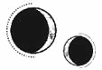

CAPÍTULO 12
Helena abrió la puerta; tenía en una mano un trozo de cristal, y vio a Lila sentada en el suelo, encogida como una niña que no quiere ser encontrada. No llevaba puesta la armadura. Sus ojos estaban enrojecidos, el cabello largo y claro rasurado, y, cuando se giró para mirar a Helena, dejó al descubierto el lado derecho de la cara.
Una cicatriz gruesa le atravesaba un lado del rostro y la garganta.
—Lila. Lila, ¿qué sucede? ¿Qué ha pasado?
Lila miró fijamente a Helena y tardó un buen rato en responder.
—He cometido un error —dijo al fin en apenas un susurro—. He cometido un terrible error.
—No… No pasa nada. Estoy segura de que se arreglará. Da igual lo que hayas hecho, seguro que no es para tanto.
—No —dijo Lila—. He mentido a todo el mundo…
Helena despertó de repente y se incorporó a la vez que el sueño se interrumpía.
Los síntomas de abstinencia de la pastilla le golpearon como un ladrillo, y volvió a desplomarse, sintiendo que sus emociones la sofocaban. Le dolía hasta respirar.
Intentó ignorarlas para centrarse en el recuerdo.
¿Qué había estado a punto de decirle Lila? ¿Y qué le había pasado? La herida parecía reciente; la cicatriz se le antojó similar a la que ella misma tenía en el pecho, donde no se había usado la vivemancia.
Helena no entendía por qué. Lila nunca fue de las que se negaban a la sanación. Como paladina primera de Luc, sufría una gran presión por mantenerlo a salvo, por demostrar que se merecía su rango.
A veces se ponía de mal humor cuando no la dejaban recuperarse tan rápido como ella quería, desdeñando las advertencias de Helena sobre el equilibrio de las cosas: la sanación acelerada pasaba una mayor factura en el cuerpo que una recuperación natural; si se abusaba podía matarla. Siempre había un precio que pagar, de alguna forma y por alguien.
A Lila jamás le interesó todo eso. Lo único que le importaba era proteger a Luc.
Unos días después, la nieve de la montaña cubrió toda la finca, aislando Puntaférreo del resto del mundo. La vida se volvió monótona hasta que llegó el momento de la tercera sesión de la transferencia.
De nuevo, Helena sintió que el Sumo Inquisidor aplastaba su consciencia hasta reducirla al olvido y desaparecía todo lo que había hasta ese instante en el que se entrelazaban sus mentes.
Esta vez, cuando notó que él pestañeaba, ella misma cerró los ojos. No solo la controlaba físicamente, sino que también la zarandeaba en el paisaje mental que estaban compartiendo. Podía sentir cómo su mente se movía en los entresijos de la suya, mientras su consciencia intentaba persuadirla.
Al sentir su presencia, Helena finalmente pudo percibir las extrañas formas que adoptaban sus pensamientos, cómo serpenteaban de una manera antinatural.
En muchos casos eran canales de evasión sin fisuras, lisos y rectos, que se negaban a desviarse de su curso, pero había una grieta, como si una parte se hubiera construido por separado.
Ella sintió que Ferron la descubría y, antes de que este hiciera presión, reaccionó.
Una oleada autodestructiva de desesperación estalló en su interior, como una bomba activándose en su cabeza.
Ferron desapareció, todo desapareció.
Cuando recobró la consciencia, apenas era capaz de formar un pensamiento. La vibración que sentía al respirar le provocaba un dolor que se asemejaba a latigazos en la mente.
No tenía mucha fiebre, pero tampoco mejoró en los siguientes días.
En sus sueños, había gente a su alrededor, decenas de personas. Cuando se dormía, la arrastraban bajo el agua y la ahogaban. Unas manos pálidas la sujetaban. El agua helada le llenaba los pulmones. La retorcían y tiraban de los brazos y las piernas. Unas uñas astilladas se le clavaban en la piel. Le metían dedos en la boca y le forzaban la mandíbula hasta que la abría. Le metían dedos también en los ojos, pero nunca moría.
Solo seguía ahogándose.
Se despertaba asfixiada, dando arcadas como si su cuerpo quisiera deshacerse del agua fantasma atrapada en sus pulmones. No conseguía abrir la boca. Todo lo veía del revés.
Reconoció la voz del experto cerebral, tartamudeando mientras explicaba que la mente era compleja, que no se entendía del todo, que la enfermedad de Helena no tenía precedentes y que poco podía hacerse, salvo esperar a ver qué sucedía.
Cuando por fin empezó a recuperarse, sintió que una parte de ella había muerto.
La invasión de Ferron era inevitable, avanzaba un poco más todos los meses, y las grietas de su mente iban ensanchándose para darle espacio. Helena no disponía ni de la fuerza ni de la voluntad para resistirse.
Habían perdido la guerra. Su sufrimiento no traería a nadie de vuelta, al igual que Luc no había logrado salvarlos.
Cuando finalmente pudo levantarse de la cama, desafió al frío y se dirigió a los establos. La puerta lateral no estaba cerrada con llave, así que entró rápido, antes de que los necrómatas pudieran detenerla.
Los establos estaban vacíos. La muerte volvía a escapársele de entre los dedos.
El invierno se recrudeció, se hundió en un frío tiránico que se colaba por las rendijas de la casa, y el hierro se convirtió en venas heladas que llevaron la intemperie del pleno invierno por todos los pasillos y habitaciones, hasta congelar toda la casa, a pesar de lo mucho que siseaban los radiadores.
Los Ferron huyeron a la ciudad y dejaron a Helena atrás. En su ausencia, las comidas mejoraron, ya que no había sobras y el pan estaba menos rancio, aunque la ingesta de proteínas se redujo todavía más.
Durante varias semanas, los periódicos fueron su único vínculo con el mundo exterior. El programa de repoblación que, en sus inicios, se había considerado una necesidad económica, empezaba a mostrarse poco a poco como el nuevo límite científico. Nueva Paladia forjaría su propio futuro; los repertorios alquímicos no se dejarían al azar. Las familias del programa eran elegidas según la fuerza y la diversidad de sus resonancias. Se hacían pruebas para descubrir las mejores combinaciones.
Según difundían los artículos, las familias del gremio habían acertado sobre casarse en resonancia. Sin la interferencia de supersticiones retrógradas se gestaría un nuevo mundo. Las habilidades resonánticas alcanzarían cuotas nunca vistas.
La jerga científica y el abuso de términos como «genialidad» y «revolucionario» intentaban mostrar que el programa era el siguiente paso lógico. Nunca se explicaba adónde irían esos recursos, quién los iba a gestionar o que se trataba de personas; solo reiteraban que existirían y que serían muy valiosos para la industria y la economía.
Nueva Paladia empezaba a verse más como una fábrica que como una ciudad, diseñada para producir al milímetro a los distintos alquimistas que requerían los gremios.
Las páginas de sociedad, a las que anteriormente apenas les dedicaba un vistazo, se fueron convirtiendo en las secciones que leía con más atención, porque se percató de una tendencia inquietante. En el transcurso de unas semanas, hubo varios apellidos que desaparecieron. La sociedad gremial de Paladia solo contaba con un puñado de miembros reconocibles, así que a Helena no le pasó desapercibido cuando desaparecieron de repente, sobre todo cuando esas páginas solían bullir de cotilleos y ahora se mostraban reacias a especular sobre su paradero.
Helena no pudo evitar preguntarse si sería un signo de una insurrección cada vez más latente. Tal vez, las grietas en la fachada de la Nueva Paladia comenzaban por fin a calar hondo.
Empezó a tener sueños en los que se sentaba enfrente de Ilva Holdfast y al lado de Crowther. Miraba alternativamente el gesto cansado de Ilva y la mirada inquisitiva de Crowther.
Sabía que estaban esperando a que dijera algo, pero siempre se despertaba antes de pronunciar palabra.
Al dejarla totalmente sola, Puntaférreo se convirtió en sus dominios. Una vez que se hubo marchado Aurelia, Helena pasó poco tiempo en su habitación y se acostumbró a ignorar la órbita constante de los necrómatas que la seguían. Evitaba las estancias grandes y los lugares más oscuros, y adquirió el hábito de abrir las puertas y coger objetos con mucho cuidado de no clavarse los grilletes.
Tuvo suerte con los reconocimientos porque, cuando Aurelia regresó de la ciudad, Helena se había aprendido todos los rincones ocultos y los pasadizos de los sirvientes, ideales para esconderse.
Aurelia no volvió sola. Se trajo un acompañante: el hombre de hombros anchos que Helena había visto en la fiesta del solsticio. La primera vez que Helena los encontró juntos, Aurelia estaba totalmente desnuda, tumbada sobre una alfombra de piel de oso, riéndose bajo el cuerpo de su amante. Ferron seguía en la ciudad, así que los dos parecían querer aprovechar al máximo su ausencia.
Helena tardó más de una semana en verlos completamente vestidos. En la parte trasera de la casa se extendía un enorme laberinto de setos. A veces, Helena pasaba el tiempo recorriéndolo con la mirada. Estaba a punto de llegar al centro cuando Aurelia salió del laberinto. Su acompañante la seguía de cerca.
Aurelia hablaba entusiasmada. Era la primera vez que Helena la veía contenta, aunque su acompañante parecía absorto con la casa, estirando el cuello sin cesar. Fue entonces cuando Helena consiguió verle la cara.
Lancaster.
Helena se encogió al instante.
¿Lancaster era el amante de Aurelia? ¿La misma persona que casualmente encontró su habitación durante la fiesta?
Era imposible que fuese una coincidencia.
¿Sería…?
A Helena le aterraba siquiera permitir que la posibilidad existiera en su mente, porque Ferron entraría otra vez y la descubriría, pero no pudo evitar preguntárselo.
¿Sería Lancaster un espía? ¿Y si pertenecía a la Resistencia y por eso había buscado a Helena? ¿Acaso eso era lo que había intentado comunicarle?
¿Formaría parte de sus recuerdos ocultos? Seguramente. Aquello explicaría por qué se sorprendió tanto cuando Helena no lo reconoció.
Volvió a la ventana, pero Aurelia y él habían desaparecido.
Helena empezó a vigilar a Lancaster, cada vez más convencida de que tenía un motivo oculto para visitarla. Él intentaba escaparse de Aurelia de vez en cuando, siempre atento, buscando con la mirada.
Helena sopesó el riesgo que suponía acercarse a él. Si sus sospechas eran correctas, tendría que escapar antes de que Ferron regresara. Pero precipitarse podría condenarlos a los dos.
Era mejor aferrarse a una sospecha sin confirmar que exponerse a algo que Ferron pudiera descubrir.
Agradeció no tener que tomar una decisión cuando Ferron regresó sin previo aviso.
Parecía cansado. Su aspecto era extenuado, pero se enderezó y se recompuso con rapidez en cuanto vio a Helena.
—Stroud vendrá mañana —le anunció—. Le preocupa tu estado físico.
Helena se puso en tensión.
—He estado caminando. Nada ha cambiado.
—Llegará después del almuerzo —dijo sin añadir nada más antes de marcharse—. Asegúrate de estar en tu habitación.
Cuando Stroud llegó, Mandl no la acompañaba. Sin contemplaciones, obligó a Helena a quedarse en ropa interior delante de ella, entre tiritones. La vivemante la rodeó, pasó los dedos por sus hombros y la atravesó con su resonancia.
—¿No te alimentan bien? —preguntó al cabo de un rato, mordiéndose el labio. Se detuvo para pellizcar el brazo de Helena. Luego clavó dos dedos en su estómago—. Muestras signos de malnutrición. ¿Qué estás comiendo?
A Helena le dolía la piel del frío. El aire la estaba calando hasta los huesos.
—S-sobras de la cocina —respondió temblando.
—¿Qué? —Stroud dio un paso hacia atrás y miró a Helena de arriba abajo—. Descríbeme exactamente qué has estado comiendo.
Helena tragó saliva e intentó concentrarse.
—Hum… Está todo hervido. Algún cereal, las mondas de las verduras, tuétano, y a veces las sobras de la carne. Cuando están los Ferron aquí, creo que también me dan lo que les sobra del plato. Pero no han estado en casa últimamente, así que no he comido mucha carne.
—Eso es lo que les damos como alimento a los necrómatas. ¿Por qué estás comiendo eso?
Helena pestañeó al escuchar esa información. Tenía sentido, pero sentía demasiado frío para reaccionar a la noticia.
—Porque soy una prisionera. Supongo que no creen que deban alimentarme bien.
—Eres un… —Hizo una pausa, como si estuviera debatiendo consigo misma cómo definirla—. Un recurso. Se supone que los Ferron tienen que alimentarte como es debido. Esos platos no son lo bastante nutritivos, no me extraña que seas tan enfermiza.
El semblante de Stroud se llenó de ira. Se giró y se dirigió hacia la puerta, donde una de las criadas necrómatas esperaba en silencio.
—Quiero ver al Sumo Inquisidor. Aquí. En persona. Ahora.
Ferron llegó unos minutos después con el ceño fruncido y no le dedicó ni una simple mirada a Helena, que seguía temblando en ropa interior.
—¿Me has hecho llamar?
—¿Hay algún motivo en concreto por el que la estéis matando de hambre? —dijo Stroud, clavando los dedos en el brazo de Helena, levantándolo y haciéndolo girar—. Miradla. Os quejáis de sus fiebres, pero no le dais de comer más que las sobras de la cocina.
Por primera vez, Ferron observó a Helena con atención.
—¿Cómo dices?
—No es una necrómata —insistió Stroud—. Necesita comida de verdad. No podéis esperar que soporte las transferencias si la matáis de hambre.
Ferron no dijo nada, pero Helena habría jurado que palideció un tanto.
—Di por sentado que estaba comiendo lo mismo que Aurelia y yo. —Flexionó los dedos con tensión—. Es Aurelia quien se encarga del menú. Haré las pesquisas pertinentes.
—Quiero que preparéis comidas completas. Que coma tanto como necesite, con porciones de carne y verdura de verdad. Y gachas o caldos entre comidas, hasta que recupere la salud.
Ferron se limitó a asentir.
—La alimentaremos como es debido. Yo mismo me encargaré de ello.
—Gracias, Sumo Inquisidor. Espero que así sea. —Stroud se giró hacia Helena.
Ferron no se movió, siguió observando a Helena hasta que Stroud lo miró por encima del hombro.
—Podéis ir a ver si tendrá una comida adecuada esta noche.
Ferron pestañeó, asintió con brevedad y se marchó.
—Túmbate —le ordenó Stroud en cuanto se cerró la puerta—. Quiero comprobar más cosas.
Helena se dejó caer sobre la cama, aliviada. Hasta los dedos fríos de Stroud se le antojaron calientes cuando le examinó las piernas. Después siguió hasta el abdomen, donde presionó con el canto de la mano para palpar los órganos de Helena.
Helena nunca se había planteado que pudiera estar malnutrida. Durante la guerra era habitual que hubiera escasez de comida, y quienes luchaban tenían prioridad; necesitaban una alimentación equilibrada y de calidad. Los que no combatían se conformaban con lo que quedaba.
Cuando la Resistencia perdió los puertos, hubo escasez de casi todo.
La resonancia de Stroud le revolvió el estómago. Dio una arcada e intentó incorporarse.
—De eso nada. Túmbate.
Antes de que protestara, Stroud le clavó los dedos en la base del cráneo y a Helena se le dieron la vuelta los ojos y la engulló la inconsciencia.
Cuando despertó, Stroud ya se había marchado. Helena se encontraba fatal, totalmente desorientada. Sentía pesadez en todo el cuerpo y tenía la visión borrosa, además de un moratón bien visible y doloroso junto a la cadera izquierda, como si le hubiesen clavado una jeringuilla. Helena se frotó la piel sobre la marca e intentó recordar qué inyecciones se ponían para tratar la malnutrición, pero estaba demasiado confusa para pensar con claridad.
Aquella noche, cuando oyó que llamaban a la puerta, entró una criada que traía una bandeja con una comida completa. Carne con salsa de vino tinto, dos platos de verdura diferentes, uno con queso, y unas rebanadas gruesas de un pan blando y suave untadas generosamente con mantequilla, y hasta una pera en almíbar de postre.
Helena se atiborró de todo, aunque sabía que podía acabar vomitando. Se estaba muriendo de hambre.
Aún seguía comiendo cuando entró Ferron para inspeccionar la comida.
—Al parecer, me veo obligado a supervisarlo todo personalmente —dijo con el ceño fruncido y dando un paso atrás—. Podrías haberlo mencionado.
—Si quisiera quejarme, la comida no sería lo primero que mencionaría —replicó mientras clavaba la cuchara en la pera para comerla a pequeños mordiscos. No quería que Ferron le metiera prisa.
Este inclinó la cabeza con una expresión de irritación y se acercó a la ventana más cercana. Helena empezó a dar mordiscos aún más pequeños y a masticar exageradamente.
Cuando por fin terminó, sintió que estaba a punto de estallar. Quiso acurrucarse y echarse a dormir, pero Ferron le señaló la cabeza. Helena suspiró y se sentó al borde de la cama. Odiaba que todo aquello se hubiera convertido en una rutina. Hasta sus sueños parecían seguir el mismo patrón repetitivo.
Seguía soñando con Ilva y Crowther. Y con Lila llorando. Una y otra vez, los recuerdos parecían perseguirla.
Ferron también los consideró interesantes. Los observó varias veces hasta que llegó a los días en los que estuvo espiando a Lancaster, cuando se preguntaba si habría venido a salvarla.
Ferron apartó la mano.
Cuando recobró la vista, estaba tumbada de espaldas en la cama, y la cara de Ferron justo encima de la suya.
—Lancaster será un inmarcesible dentro de poco —comentó—. Un reconocimiento tardío a su servicio «excepcional» durante la guerra.
Había algo desdeñoso en la forma en que lo dijo, sin embargo, si pensaba arrastrar a Helena a la desesperación, fracasó estrepitosamente. Que Lancaster no fuera todavía uno de los inmarcesibles aumentaba las probabilidades de que fuese un espía de la Resistencia. Debía de creerse lo bastante digno de confianza para acercarse tanto a Helena sin levantar sospechas.
—¿Tú lo eres? —preguntó Helena. Siempre lo había dado por sentado, pero empezaba a pensar que era algo muy distinto.
Él sonrió lentamente.
—¿Tú qué crees?
Helena negó con la cabeza; no estaba segura.
La sonrisa desapareció, pero Ferron siguió mirándola con unos ojos más oscuros que nunca.
Se dio cuenta entonces de que estaba tumbada en la cama debajo de él. Sintió calor en la piel y se estremeció cuando se incorporó rápidamente y se cruzó de brazos.
Ferron dio un paso atrás y se irguió.
—Si albergas esperanzas respecto a Lancaster, deberías perderlas.
Lila estaba sentada al borde de la cama de Helena con el ceño fruncido y sin dejar de mirarla. No tenía ninguna cicatriz en la cara.
—¿Es que no…? —La chica desvió la mirada, como si estuviera midiendo sus palabras con cuidado—. ¿Ya no te encuentras bien? ¿Por eso decidiste hablar con ellos? ¿Por eso han traído a las aprendizas?
Helena miró fijamente a su amiga, pero esta estaba desabrochándose una cincha de la armadura y no se dio cuenta.
—No, estoy bien. Lo de las aprendizas es porque Matias desea quitarme del medio.
—Ah, vale… Ah, bien… Bueno, bien no, pero tiene sentido —replicó Lila, carraspeando—. Ahora entiendo por qué no te hace tanta gracia tener ayuda.
Helena se forzó a reír.
—Oye, ya sabes que puedes hablar conmigo… siempre que lo necesites. —Lila la miró de reojo.
—No —Helena negó con la cabeza—, no necesito hablar. No… va a servir de nada, ya que, como me han recordado, yo no soy una combatiente. No sé nada acerca de la guerra. Así que… ¿qué voy a decir?
Lila se giró hacia ella con un tintineo de la prótesis de la pierna.
—Pues yo creo que trabajar en el hospital es mucho peor que el campo de batalla. —Helena se quedó muy quieta—. Lo comprendí cuando estuve allí por lo de mi pierna. —La chica tenía la mirada ausente y había fruncido el ceño—. En el frente… todo tiene sentido, ¿sabes? Las reglas son claras. A veces ganamos, a veces perdemos. Te golpean y devuelves el golpe. Y te permiten unos días de descanso para que te recuperes. Pero… —bajó la vista mientras se daba golpecitos distraídamente en el punto donde la prótesis encajaba con su muslo— en el hospital todas las batallas parecen perdidas desde el principio. No me quiero imaginar lo que debe de ser estar ahí todo el tiempo. —Miró a Helena—. Lo único que ves allí es la peor parte de la guerra.
Helena no dijo nada.
Lila suspiró. Siguió desabrochándose la armadura y dejó las piezas sobre la cama de Helena.
—Cuando Soren me contó lo que dijiste… Quiero que sepas que lo entiendo, aunque no comparta tu opinión. —Lila le dio un suave codazo y se puso en pie—. Puede que lo de las aprendizas sea un tejemaneje de Matias, pero me alegro de que tengas más tiempo libre. Creo que te va a venir bien… Necesitas alejarte un poco de todo esto.
Helena pasó días rememorando aquella conversación. Echaba tanto en falta tener gente con quien hablar, gente a la que le importara lo que decía…
¿Había tenido aprendizas?
Recordaba que Stroud había mencionado que existían otras sanadoras, como Elain Boyle, pero Helena había dado por sentado que provenían de otros lugares.
No se imaginaba al falcón Matias dando su aprobación para que hubiera más sanadoras.
Ilva Holdfast tuvo que esforzarse mucho para que la Resistencia aceptara la vivemancia de Helena. Declaró que tener a una vivemante entre sus filas era voluntad de los dioses, y que Helena había nacido con ese propósito, que los Holdfast la habían descubierto y la habían traído a Paladia porque estaba destinada a ser sanadora. Así, si Luc resultaba herido en batalla, la vivemancia lo salvaría; una resonancia corrupta purificada a voluntad de Sol.
Helena tuvo que marcharse de la ciudad e ir a las montañas para formarse con un monje ascético. En aquella época, Matias era alcaudón y vivía en una cabaña cerca de la mansión de los Holdfast, donde ejercía de consejero espiritual para la familia.
Tenía como principio detestar a los sanadores y odió a Helena en cuanto la vio.
Todo lo que ella hacía lo consideraba inapropiado para una sanadora. Más que maestro, fue un obstáculo, pero Helena era testaruda y sabía lo suficiente de medicina como para dirigir su propia formación. Estaba decidida a ser sanadora, lo quisiera él o no.
Cuando Ilva exigió que Helena volviera a la ciudad porque Luc se había ido al frente, Matias trató de impedirlo y alegó que la joven era una inepta. Finalmente, Ilva lo sobornó con la promesa de que Luc lo nombraría falcón, un cargo religioso de alto rango con el que podía formar parte del Consejo. Pero, incluso así, solo accedió con la condición de que, si Helena era la sanadora de la Llama Eterna, sanaría a todos los que sirvieran a la causa sagrada de Sol.
Al fin y al cabo, el principado no estaba por encima de los demás, sino que era el primero entre iguales.
¿Por qué Matias dio el visto bueno para que tuviera aprendizas?
Helena no podía evitar recordar a Lila con melancolía.
Cuando Helena regresó como sanadora, le desaconsejaron que se mostrara demasiado cercana a Luc. Una amistad de la infancia podía ser algo bello, pero una persona como Helena no debía dar la impresión de ejercer demasiada influencia en el principado.
La supervivencia de Paladia dependía de la fe inquebrantable que la Resistencia le profesaba a Luc. Si cuestionaban su juicio, toda Paladia sufriría las consecuencias. Había que hacer algunos sacrificios.
Después de aquello, que Lila fuera la paladina primera de Luc era lo más cerca que le permitieron estar de Luc. Lila había sido paladina primera…
Helena pestañeó.
Hubo también un paladín segundo, Soren. El hermano gemelo de Lila. ¿Dónde estaba Soren?
A Helena le palpitó la cabeza.
¿Por qué se había olvidado de Soren? Él…
Un rostro apareció brevemente en su memoria. La mente de Helena se sacudió con violencia, como si retrocediera. No. Intentó concentrarse.
«Soren. Acuérdate de Soren. ¿Qué le pasó?».
Sintió un escalofrío y un dolor espantoso que le recorrió el cuerpo. Le entraron ganas de toser como si tuviera agua atrapada en los pulmones, y empezó a verlo todo de un rojo intenso.
Cuando se le aclaró la mente, le palpitaban las sienes.
¿En qué había estado pensando?
Algo sobre… ¿Lila?